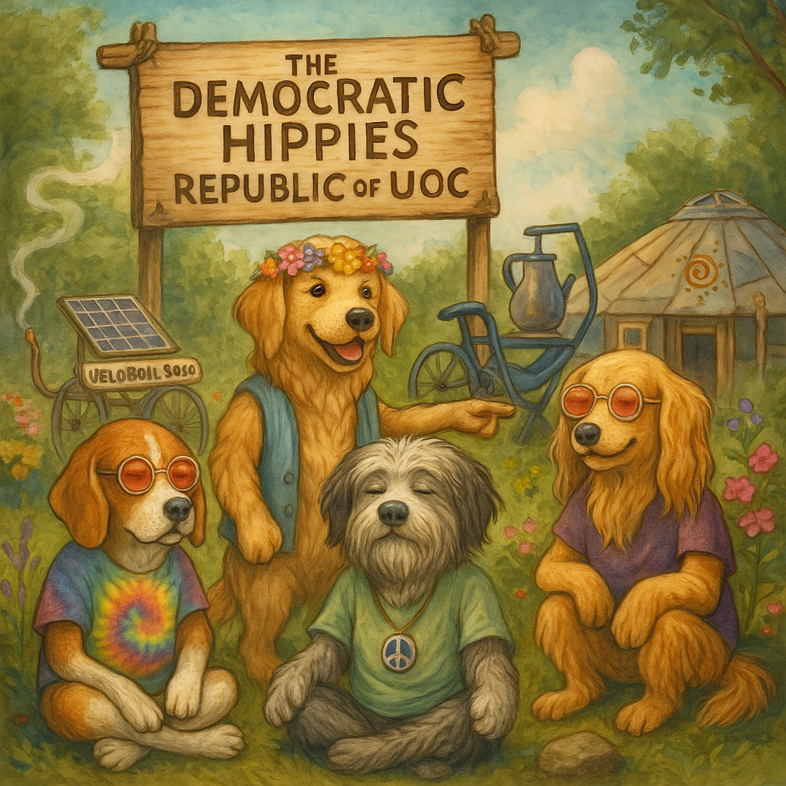

The UOC Observer
H'Online Since 2024 Fwend

Tour Guide Chance adjusted his flower crown.
He was ready.
“Come now, fwend,” he said, tail flicking. “Let me shows you the wonders h’of the Democratic Hippies Republic h’of UOC!”
Post Chance followed, blinking through the haze of patchouli, incense, and gently bubbling fruit bongs.
They passed the Hammock Pavilion, the Nap Ziggurat, and the great Solar-Thermal-Lentil Oven (“uses vibes instead h’of fire,” whispered Chance).
Everywhere, Hippies lounged.
Some were painting trees. Others were chanting “H’armony over Hjierarchy” while passing around a bowl of “sharing pebbles.”
A Hippie named Tranquil Rusty stepped forward.
“We wus hurt, y’know,” he said, eyes watery. “UOC never wanted us. Said we smelled wrong. That we slowed fings down.”
A nearby Hippie nodded solemnly.
“We tried to help,” he added. “We even f’ought about joining the Kittehs… but their h’auras? Maaaan. So jagged. We had migraines for a week.”
Post Chance patted him gently.
“You gots a good republic now, fwends.”
Tour Guide Chance beamed. “Wait ‘til yous sees our invenshuns!”
They turned the corner and came face-to-face with:
They arrived at the Debate Dome, a yurt made entirely from old protest signs and baked bean tins. Inside, the Hippies were mid-session:
“Comrades,” began a stoned Labrador, “we must considers the redistribution h’of snacks.”
Another puffed a vapour cloud shaped like a heart. “Let us build a system where we h’all carry one another…”
The crowd murmured approval and swayed gently to acoustic sitar music.
Post Chance sighed. “This is… peaceful.”
He sat down beside them.
Then noticed something in the corner.
A clock. Or rather, a driftwood sun calendar powered by heat from nearby bong smoke.
His ears twitched.
His eyes widened.
“Oh stjars—I’m LATE!”
He bolted upright, scrambled for his bag, and launched out the dome in a flurry of leaflets and “sorry sorrys,” galloping toward the gates.
Far beyond the Lentil Walls...
Sergeant and the Joplinites crouched beneath the shade h’of the twisted fences near UOC Tower.
They moved as one. Steady. Precise.
Inside the ruins, cobwebs stirred. The smell of abandoned clipboards and failure lingered.
A shadow emerged.
“McGee,” Sergeant growled, relaxing only slightly.
“Sergeant. Fwends,” said McGee. “You should know… the Devşirme? It’s working. The Behbejs? They’s… different now. Sorting without commands. Obedient. UOC will soon be h’unconquerable.”
Sergeant tensed.
Then—
A whistle.
Bright. Breezy. Familiar.
“No…” breathed McGee.
Post Chance.
Skipping down the ruined path.
Pouch full. Spirit high.
“Lovely day for delivery!” he chirped, slipping a letter through the door.
The door burst open.
ShimmerWhisker.
Eyes wide. Hackles raised.
“You! But… the Squire gots yous!!”
“Mjorning,” Post Chance said cheerily.
ShimmerWhisker raised his paw—but too slow.
BOOM.
Sergeant collided with him like a
freight train, sending him sprawling. He muttered “...the
Squire...” before flopping out cold.
Sergeant grabbed Post Chance.
“No time. Move!”
The Joplinites fell in line. The squad galloped off at speed—vaulting a discarded clipboard pile, darting past crumbling gates, tearing through the undergrowth.
Only once safely beyond the edge h’of the UOC grounds did they stop to catch breath.
“That… was close,” muttered Sergeant.
Then a Joplinite blinked.
“Where’s he even getting h’all h’of the letters fwom?”
“The sjorting h’office h’of cjourse,” said Post Chance, like it was the most obvious fing in the world.
Sergeant froze.
Set Post Chance down slowly.
“Fwend… what do yous mean… the sjorting h’office?”
Tap tap tap.
A flap twitched.
“‘Ees back!” came an excited voice from behind the wall.
CLANG. CLANG. CLANG.
Locks slid back. Levers turned.
A long hiss as the main bolt lifted.
“Pjost is a vewy sensitive fing,” said Post Chance, brushing his fur. “Gots to keeps h’everyones info sjafe.”
Sergeant tilted his head. Something… wasn’t right.
The door opened.
Roaring. Cheering. Celebration.
Dozens—no—hundreds h’of Behbejs rushed forward.
Each wore a tiny postal uniform. Each bore the UOC crest.
Some pushed letter carts. Some waved mini clipboards. Others high-fived Post Chance.
“Delivering pjost can be vewy dangerous,” he explained. “They’s always happy when I gets back.”
Sergeant staggered in, past bins labelled:
“Nigella!!” cried a Joplinite. “Did she write to me?!”
SLAP.
Sergeant snapped his paw across the Joplinite’s muzzle.
“Stay focused. That’s not the stowy.”
Post Chance was already filling a new satchel, tail swishing merrily.
Sergeant grabbed him.
“Post Chance. Where did all these Behbejs cjome fwom?! Why has no one heard of the Sorting Office?!”
Post Chance hesitated.
“...I delivers thems. But I had a ljot to doos, fwend. So… I kept a few.”
He smiled.
“They likes it here! They sort! They’s happy!”
“You stole them?!” gasped a Joplinite.
“...Technically ljost mjail. I always delivers thems befjore they graduate! But I makes thems sign NDAs. Say no sue.”
Sergeant looked around.
This…
This could change the whole war.
Elsewhere.
The air was perfumed. The couch was velvet.
He sat. Quiet. Pensive.
He hadn’t expected a response.
He certainly hadn’t expected the Grand Vizier.
“I always liked you,” H’Allen said, sipping from a goblet of Coke Zero and gin. “You was always kind. Never made me sweep hedges or clean kibble.”
Weggie nodded.
“They never wanted me,” he muttered. “Said I was too h’airy. Too ‘pork-forward’.”
“That booking committee never thinks,” said H’Allen. “They feared what you could become.”
He leaned forward.
“I read those books,” he whispered. “You could be someone else. Someone bigger.”
He switched to UOC-speak.
“All you gots to do, fwend… is tells me where they’s hidin’.”
Weggie blinked.
His eyes gleamed.
“I just wanted to be… Ham-dalf.”
H’Allen smiled.
“You’re better than Ham-dalf now.”
And slowly, slowly—
Weggie nodded.